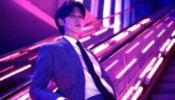
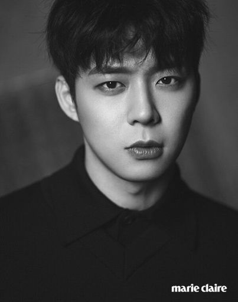

Solos do TVXQ/JYJ
Jaejoong
- WWW
- NO.X
- Flawless Love
- Love Covers
- Love Covers II
- I
- Y
- Ayo | Love Song
- Sign/Your Love
- Defiance/Lavender
- Brava! Brava! Brava / Ray of Light"
- "Breaking Dawn"
- 인사 (Greetings)
- 사랑아(Love)
- To You It's Goodbye, To Me It's Waiting
- "지켜줄게" (I'll Protect You)
- 살아도 꿈인 것처럼" (Living Like A Dream)
- Stay
- 싫어도 (But I)
- 우연 (Coincidence)
- Defiance
- Ray of Light
- Even If I Call You
- Breaking Dawn
- Things We Should Love
- We're
- Sunao ni Narenakute (2010)
- Protect the Boss (2011)
- Time Slip Dr. Jin
- Triangle (2014)
- Spy (2015)
- Manhole (2017)
- Taegeukgi (2004)
- Heaven Postman (2010)
- Jackal is Coming (2012)
- On The Road - an artist's journey (2021) - documentário
- 2014 7º Korea Drama Awards: Top Excelência, Ator (Triangle)
- 2012 MBC Drama Awards: Prêmio de Melhor Estreante Masculino (Time Slip Dr. Jin)
- 2011 SBS Drama Awards: Prêmio Nova Estrela (Protect the Boss)
- 14º Nikkan Sports Drama Grand Prix (Primavera 2010): Melhor Ator Coadjuvante (Sunao ni Narenakute)
- 2nd Annual SM Entertainment 'Best Competition': 1 º Lugar de Melhor Aparência
- True Colors
- Noir
- Reality Show
- U Know Y
- Kimi wa Saki e Iku
- Dating on Earth
- Haru: An Unforgettable Day in Korea
- Chorus City
- I AM.
- Make Your Move
- Ode to My Father
- SMTOWN The Stage
- Heading to the Ground
- Poseidon
- Living Among the Rich
- Welcome to the Show
- King of Ambition
- Saki
- Diary of a Night Watchman
- I Order You
- Meloholic
- Confession Couple
- Tensai Bakabon 3
- Race
- Kim Yuna's Kiss & Cry
- Dunia: Into a New World
- 2020 KBS Song Festival
- Analog Trip
- I live alone
- Book This Out
- Goong: Musical
- Gwanghwamun Sonata
- Baeksang Arts Awards
- Seoul International Drama Awards
- MBC Drama Awards
- Presidential Commendation
- Brand Customer Loyalty Awards
- How Much Love Do You Have In Your Wallet (2016)
- Slow Dance (2019)
- Beautiful Love
- Sungkyunkwan Scandal
- Miss Ripley
- Rooftop Prince
- Missing You
- Three Days
- The Girl Who Sees Smells
- Haemoo
- Lucid Dream
- The Hometown in Which I Used to Live
- Human Documentary Love - Ep. 4>
- 기적의 피아노 / The Piano
- TVXQ Bigeastation
- 2013 49º High1 PaekSang Arts Awards
- 2012 SBS Drama Awards
- 2012 MBC Drama Awards
- 2012 7º Seoul International Drama Awards
- 2012 48º Baeksang Arts Awards
- 2011 6º Seoul International Drama Awards
- 2011 MBC Drama Awards
- 2011 47º Baeksang Arts Awards
- 2010 KBS Drama Awards
- Tarantallegra (2012)
- Incredible (2013)
- Flower (2015)
- Xignature (2016)
- Yesterday (2015)
- "Xiah" (2010)
- "Tarantallegra" (2012)
- "Uncommitted" (2012)
- "Thank U For" (2012)
- "11AM" (2013)
- "...IS YOU" (2016)
- "Cake Love (PROD by The Black Skirts)" (2016)
- Family Outing (2008)
- Intimate Note (2008)
- Immortal Music Classics (2008)
- Scent of a Woman (2011)
- Mozart!
- Tears of Heaven
- Elisabeth!
- December
- Dracula
- Death Note
- Dorian Gray
- Elisabeth!
- Xcalibur
- TVXQ Bigeastation
- 2012 6th The Musical Awards
- 2012 18th Korea Musical Awards
- 2011 So-Loved Awards
- 2011 3rd Asia Jewelry Awards
- 2011 17th Korea Musical Awards
- 2011 5th The Musical Awards
- 2010 4th The Musical Awards
- 2010 16th Korean Musical Awards
- The Musical Awards
- Chocolate
- Devil
- Close to You
- Human
- "Wild Soul"
- "Big Time"
- "고백 (Confession)"
- "눈물 같은 사람 (A Person Like Tears)"
- "Rock With U"
- "Gold Dust"
- "Breath" (Japanese version)
- "Heaven's Day"
- "슬픔 속에 그댈 지워야만 해 (Because I Love You)
- "Over"
- "사랑한다 그 말을 못해서 (Because I couldn't say the words "I Love You")
- "Rise as One"
- "Apology"
- "In a Different Life"
- Closer
- "아스라이... (Beautiful Stranger)"
- "Chocolate"
- "All That Love"
- "Devil"
- I AM.
- Fly with the Gold
- SMTOWN The Stage
- Athena: Goddess of War
- Paradise Ranch
- Welcome to the Show
- Saki
- Mimi>
- The Scholar Who Walks the Night
- Tensai Bakabon 3
- Hologram Musical: School Oz
- Analog Trip
- Cool Kiz On The Block
- Kingdom
- Free Hug
- Along with the Gods 2
- Bistro Shigor
- My: Humanities that Open Work
- My Teenage Boy
- Check This Out
- Changminho's Birdie Buddy
- Hochi Film Awards
- Japan Academy Awards
- Japan Film Critics Awards
- KBS Entertainment Awards
Discografia
Studio album
Extended plays
Singles
OSTs
Filmografia
Séries de tv
Filmes
Prêmios
Yunho
Extended plays
Filmografia
Filmes
Séries de tv
Web séries
Show de variedade
Outros shows
Teatro musicais
Prêmios
Yoochun
Discografia
Filmografia
Televisão
Filmes>
Narração
Programas de rádio
Prêmios
Junsu
Discografia
Álbuns de estúdio
Eps
Singles
Filmografia
Séries de televisão
Musicais
Programas de rádio
Prêmios
Changmin